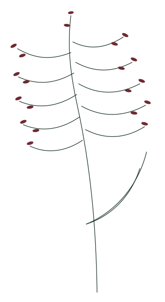

Currently growing
Raktshali rice
Grown at Ram Ganga Agro. It is not for sale.
Ram Ganga Agro
A farm, its crops, and the journey from the land to the table.

The farm
Ram Ganga Agro is a working farm. This page is the place to learn what is grown here, and how the season moves from the field toward the table. The longer story of the people and the land is being written by the farm, not invented for the site.
Our harvest
Grown at Ram Ganga Agro. It is not for sale.
One crop is enough to begin. Another crop is added when the farm is growing it. Empty cards are not used to fill this row.
From the land to the table
01
Where the season starts.
02
Soil, water, and time.
03
When the field is ready.
04
How the grain is handled.
05
The harvest, brought home.
Raktshali
This rice is growing at Ram Ganga Agro. It is not for sale. The page names the crop and leaves room for the farm’s own account. It does not describe colour, origin, or certification.
From the farm
When there is a season to record, it will be recorded here. There are no sample articles.
Harvest notes
A note when there is something to say about the season, and when a harvest is ready to leave the farm. Nothing else.